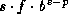
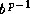
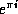
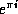

Common Lisp the Language, 2nd Edition
Common Lisp allows an implementation to provide one or more kinds of floating-point number, which collectively make up the type float. Now a floating-point number is a (mathematical) rational number of the form , where s is +1 or -1, the sign; b is an integer greater than 1, the base or radix of the representation; p is a positive integer, the precision (in base-b digits) of the floating-point number; f is a positive integer between  and (inclusive), the significand; and e is an integer, the exponent. The value of p and the range of e depends on the implementation and on the type of floating-point number within that implementation. In addition, there is a floating-point zero; depending on the implementation, there may also be a ``minus zero.'' If there is no minus zero, then 0.0 and -0.0 are both interpreted as simply a floating-point zero.
Floating-point numbers may be provided in a variety of precisions and sizes, depending on the implementation. High-quality floating-point software tends to depend critically on the precise nature of the floating-point arithmetic and so may not always be completely portable. As an aid in writing programs that are moderately portable, however, certain definitions are made here:
Floating-point numbers are written in either decimal fraction or computerized scientific notation: an optional sign, then a non-empty sequence of digits with an embedded decimal point, then an optional decimal exponent specification. If there is no exponent specifier, then the decimal point is required, and there must be digits after it. The exponent specifier consists of an exponent marker, an optional sign, and a non-empty sequence of digits. For preciseness, here is a modified-BNF description of floating-point notation.
floating-point-number ::= [sign] {digit}* decimal-point {digit}* [exponent]
| [sign] {digit}+ [decimal-point {digit}*] exponent
sign ::= + | -
decimal-point ::= .
digit ::= 0 | 1 | 2 | 3 | 4 | 5 | 6 | 7 | 8 | 9
exponent ::= exponent-marker [sign] {digit}+
exponent-marker ::= e | s | f | d | l | E | S | F | D | L
If no exponent specifier is present, or if the exponent marker e
(or E) is used, then the precise format to be used is not
specified. When such a representation is read and
converted to an internal floating-point data object, the format specified
by the variable *read-default-float-format* is used; the initial
value of this variable is single-float.
The letters s, f, d, and l (or their respective uppercase equivalents) explicitly specify the use of short, single, double, and long format, respectively.
Examples of floating-point numbers:
0.0 ;Floating-point zero in default format
0E0 ;Also floating-point zero in default format
-.0 ;This may be a zero or a minus zero,
; depending on the implementation
0. ;The integer zero, not a floating-point zero!
0.0s0 ;A floating-point zero in short format
0s0 ;Also a floating-point zero in short format
3.1415926535897932384d0 ;A double-format approximation to  6.02E+23 ;Avogadro's number, in default format
602E+21 ;Also Avogadro's number, in default format
3.010299957f-1 ;, in single format
-0.000000001s9 ; in short format, the hard way
6.02E+23 ;Avogadro's number, in default format
602E+21 ;Also Avogadro's number, in default format
3.010299957f-1 ;, in single format
-0.000000001s9 ; in short format, the hard way

Notice of correction.
The first edition unfortunately listed an incorrect value (3.1010299957f-1)
for the base-10 logarithm of 2.

The internal format used for an external representation depends only on the exponent marker and not on the number of decimal digits in the external representation.
While Common Lisp provides terminology and notation sufficient to accommodate four distinct floating-point formats, not all implementations will have the means to support that many distinct formats. An implementation is therefore permitted to provide fewer than four distinct internal floating-point formats, in which case at least one of them will be ``shared'' by more than one of the external format names short, single, double, and long according to the following rules: